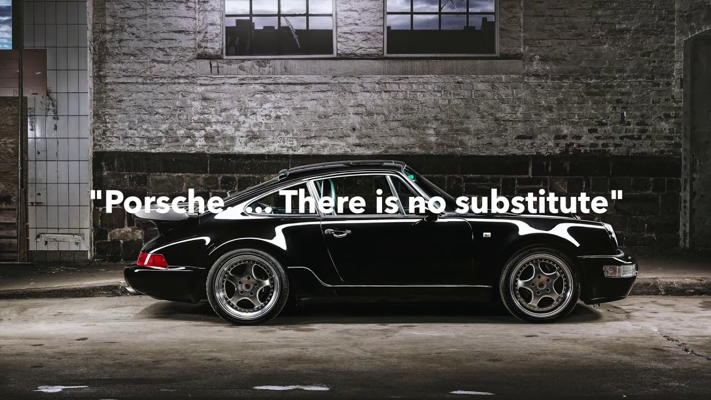
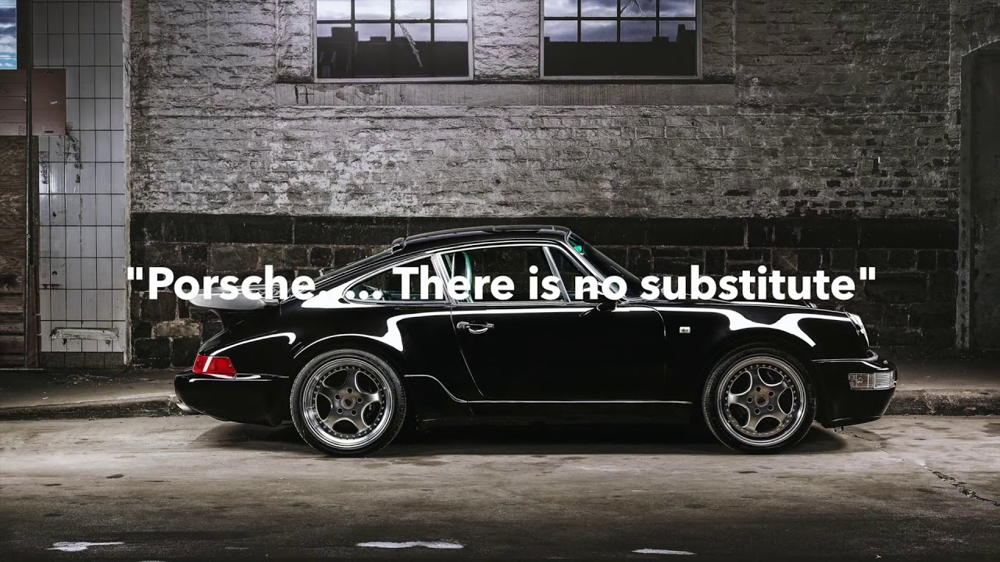

О компании

Стратегия
Основным направлением Стратегии 2025 является формирование будущего спортивных автомобилей. Ядром стратегии является модельный ряд компании. Спорткары будущего органично сочетают в себе традиции и ценности бренда Porsche с инновационными технологиями, полностью соответствуя концепции устойчивого развития. В достижении этого важную роль сыграют такие факторы, как электромобильность, цифровые технологии и возможности связи.
Узнать больше

Цуффенхаузен – сердце и дом
Сердце Porche по-прежнему бьется в Цуффенхаузене. Все началось именно здесь.Именно в этом городе было запущено массовое производство первой серийной модели Porche. И именно здесь сегодня производятся наши спорткары и двигатели. Особенностью завода является то, что даже гоночные версии автомобилей производятся вместе с серийными на одном конвейере - это не делает ни один другой автопроизводитель.
Узнать больше

Комплаенс
Porsche - самый успешный производитель эксклюзивных спортивных автомобилей, обладающий безупречной репутацией. В основе успеха компании лежит притягательная сила её автомобилей, и, что не в меньшей степени важно, уникальная корпоративная культура, главные принципы которой - честность и комплаенс. И такой она и должна оставаться. Все члены совета директоров, руководители, менеджеры и сотрудники каждый день вносят в неё свой вклад в соответствии с девизом: «Спортивный и честный – типичный Porsche».
Узнать больше

Вайсах - совершенно секретно
Научно-технический центр Porche находится в Вайсахе с 1971 года. в центре работают около 6500 человек. Центр объединяет под своей крышей конструкторское бюро, испытательские стенды, мастерсике и подразделение гоночных автомобилей.
Узнать больше